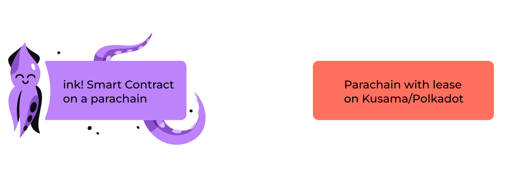
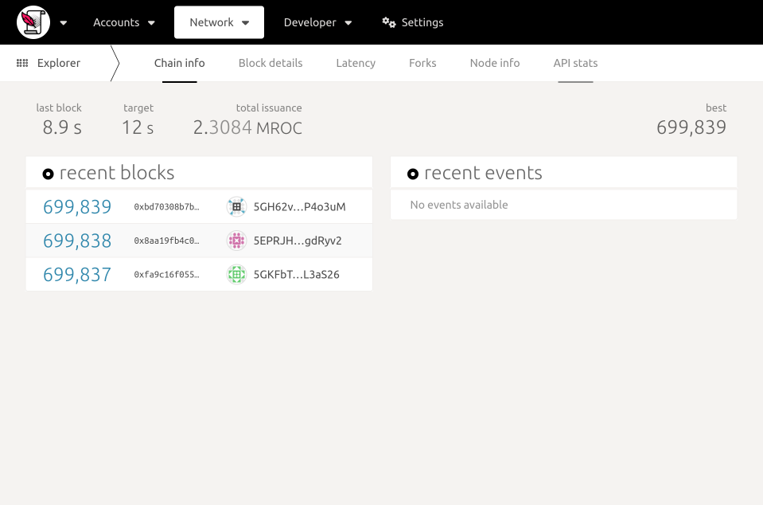
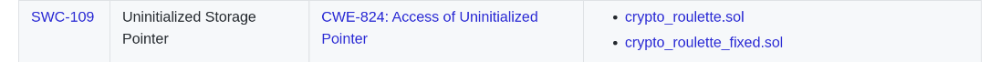

<!DOCTYPE html>
<html lang="en">
  <head>
    <meta charset="utf-8" />
    <meta name="viewport" content="width=device-width, initial-scale=1.0, maximum-scale=1.0, user-scalable=no" />

    <title>ink!</title>
    <link rel="shortcut icon" href="./../../../favicon.ico" />
    <link rel="stylesheet" href="./../../../dist/reset.css" />
    <link rel="stylesheet" href="./../../../dist/reveal.css" />
    <link rel="stylesheet" href="./../../../assets/styles/polkadot-theme.css" id="theme" />
    <link rel="stylesheet" href="./../../../css/highlight/shades-of-purple.css" />

    <link rel="stylesheet" href="./../../.././assets/styles/custom-classes.css" />
    <link rel="stylesheet" href="./../../.././assets/styles/polkadot-theme-base.css" />
    <link rel="stylesheet" href="./../../.././assets/styles/PBA-theme.css" />
    <link rel="stylesheet" href="./../../.././plugin/design-system/index.css" />

  </head>
  <body class="site">
    <header class="site-header">
      <a href="">
        
      </a>
      
    </header>
    <main class="site-reveal reveal">
      <article class="slides">
        <section  data-markdown><script type="text/template">

# 
</script></section><section  data-markdown><script type="text/template">
<widget-speaker name="Michi" position="ink! Team Lead @ Parity " image="/assets/img/0-Shared/people/michi.png" github="cmichi" matrix="michi:matrix.parity.io"></widget-speaker>
</script></section><section  data-markdown><script type="text/template">
## How does ink! tie into Substrate?


<aside class="notes"><p>How does ink! tie into Substrate?</p>
</aside></script></section><section  data-markdown><script type="text/template">
## How does ink! tie into Substrate?


</script></section><section  data-markdown><script type="text/template">

</script></section><section  data-markdown><script type="text/template">

</script></section><section  data-markdown><script type="text/template">

</script></section><section  data-markdown><script type="text/template">

</script></section><section  data-markdown><script type="text/template">

</script></section><section  data-markdown><script type="text/template">

</script></section><section  data-markdown><script type="text/template">


<aside class="notes"><p>Smart Contract vs. Parachain
Parachain:</p>
<ul>
<li>Only requirement: Minimal Polkadot API</li>
<li>Trusted Code</li>
</ul>
<p>Smart Contracts:</p>
<ul>
<li>Untrusted Code</li>
<li>Requires Metering</li>
<li>Fixed payment paradigm (gas fees)</li>
</ul>
</aside></script></section><section  data-markdown><script type="text/template">


<aside class="notes"><ul>
<li>Motivation</li>
<li>Use Case 1: Wrap Pallet</li>
<li>Smart Contracts as “first class citizen”<ul>
<li>➜ Smart Contract Parachain + $UVP_for_Contracts</li>
</ul>
</li>
</ul>
</aside></script></section><section  data-markdown><script type="text/template">


<aside class="notes"><ul>
<li>Use Case 2: Expose Business Logic</li>
<li>Smart Contracts as “second class citizen”<ul>
<li>➜ Parachain adding customizability for its business logic</li>
</ul>
</li>
</ul>
</aside></script></section><section  data-markdown><script type="text/template">


<aside class="notes"><ul>
<li>Use Case 3: Embrace Prototyping</li>
<li>Prototyping before going for own parachain</li>
</ul>
</aside></script></section><section  data-markdown><script type="text/template">
# The ink! language

<aside class="notes"><p>Just Rust
Debugging, Testing, Tooling, clippy, cargo fmt, fuzzing</p>
</aside></script></section><section  data-markdown><script type="text/template">
```rust [1-48]
mod my_contract {

    struct MyContract {
        value: bool,
    }


    impl MyContract {

        fn new() ➜ Self {
            MyContract { value: true }
        }


        fn get(&self) ➜ bool {
            self.value
        }


        fn flip(&mut self) {
            self.value = !self.value;
        }
    }
}
```

<aside class="notes"><p>Hello ink!</p>
</aside></script></section><section  data-markdown><script type="text/template">
```rust [1-24|1-2|3-6|9-12|14-17|19-22]
#[ink::contract]
mod my_contract {
    #[ink(storage)]
    struct MyContract {
        value: bool,
    }

    impl MyContract {
        #[ink(constructor)]
        pub fn new() ➜ Self {
            MyContract { value: true }
        }

        #[ink(message)]
        pub fn get(&self) ➜ bool {
            self.value
        }

        #[ink(message)]
        pub fn flip(&mut self) {
            self.value = !self.value;
        }
    }
}
```
</script></section><section  data-markdown><script type="text/template">
## Idiomatic Rust

```rust
#[ink(message)]
pub fn do_it(&self) -> Result<(), Error> {
  Err(Error:OhNo)
}
```
</script></section><section  data-markdown><script type="text/template">
## Trait Definitions

```rust [1-2,8|3-7]
#[ink::trait_definition]
pub trait BaseErc20 {
  #[ink(message)]
  fn total_supply(&self) -> Balance;

  #[ink(message)]
  fn transfer(&mut self, to: AccountId, amount: Balance) -> Result;
}
```

<aside class="notes"><p>Can be implemented by multiple contracts.</p>
</aside></script></section><section  data-markdown><script type="text/template">
## Unit Tests

```rust
#[cfg(test)]
mod tests {

    #[test]
    fn default_works() {
        let flipper = Flipper::default();
        assert_eq!(flipper.get(), true);
    }

}
```
</script></section><section  data-markdown><script type="text/template">
## Integration Tests

```rust [1-5,17,19|6-9|11-13|15-16]
#[cfg(test)]
mod tests {

    #[ink::test]
    fn default_works() {
        // given
        let my_contract = MyContract::default();
        let accounts =
            ink_env::test::default_accounts::<ink_env::DefaultEnvironment>();

        // when
        ink_env::test::set_caller::<ink_env::DefaultEnvironment>(accounts.alice);
        ink_env::test::set_value_transferred::<ink_env::DefaultEnvironment>(10);

        // then
        assert!(my_contract.received_ten());
    }

}
```
</script></section><section  data-markdown><script type="text/template">
# `$ cargo contract`

[https://crates.io/crates/cargo-contract](https://crates.io/crates/cargo-contract)

<!-- .element: class="fragment" data-fragment-index="1" -->
</script></section><section  data-markdown><script type="text/template">
## Metadata?

<br>

</script></section><section  data-markdown><script type="text/template">


<aside class="notes"><p>Build Artifacts</p>
</aside></script></section><section  data-markdown><script type="text/template">

</script></section><section  data-markdown><script type="text/template">

</script></section><section  data-markdown><script type="text/template">
# ink!-ternals


</script></section><section  data-markdown><script type="text/template">
# ink!-ternals


</script></section><section  data-markdown><script type="text/template">
# ink!-ternals


</script></section><section  data-markdown><script type="text/template">
# ink!-ternals


</script></section><section  data-markdown><script type="text/template">
# ink!-ternals


</script></section><section  data-markdown><script type="text/template">
## Development Chains

<br>
<div class="flex-container">
<div class="left"> <!-- Gotcha: You Need an empty line to render MD inside <div> -->


[`substrate-contracts-node`](https://github.com/paritytech/substrate-contracts-node)

</div>
<div class="right"> <!-- Gotcha: You Need an empty line to render MD inside <div> -->



[Rococo Testnet](https://ink.substrate.io/testnet)

</div>
</div>
</script></section><section  data-markdown><script type="text/template">
## Developer UIs

<br>
<div class="flex-container">
<div class="left"> <!-- Gotcha: You Need an empty line to render MD inside <div> -->


[https://contracts-ui.substrate.io](https://contracts-ui.substrate.io)

</div>
<div class="right"> <!-- Gotcha: You Need an empty line to render MD inside <div> -->


[https://polkadot.js.org/apps](https://polkadot.js.org/apps)

</div>
</div>
</script></section><section  data-markdown><script type="text/template">
## Developer UIs

<br>

</script></section><section  data-markdown><script type="text/template">
## Documentation

<br>

</script></section><section  data-markdown><script type="text/template">
# Building a Dapp on ink!
</script></section><section  data-markdown><script type="text/template">
## Reading Contract Values: RPC

<br>

<!-- .element: class="fragment" data-fragment-index="1" -->
</script></section><section  data-markdown><script type="text/template">
## Reading Contract Values: Events

<br>

<!-- .element: class="fragment" data-fragment-index="1" -->
</script></section><section  data-markdown><script type="text/template">

</script></section><section  data-markdown><script type="text/template">
# Security Comparison Solidity
</script></section><section  data-markdown><script type="text/template">
<div class="flex-container">
<div class="left fragment" data-fragment-index="1">


```solidity
pragma solidity 0.7.0;

contract ChangeBalance {
  uint8 public balance;

  function decrease() public {
    balance--;
  }

  function increase() public {
    balance++;
  }
}
```

</div>
<div class="right fragment" data-fragment-index="2" style="margin-left: 5%;">


- Build-in underflow/overflow protection
- `checked_add()`
- `saturating_add()`

</div>
</div>

<aside class="notes"><ul>
<li>Build-in overflow/underflow protection</li>
<li>Unless explicitly disabled by setting <code>overflow-checks = false</code> in <code>Cargo.toml</code></li>
</ul>
</aside></script></section><section  data-markdown><script type="text/template">
<div class="flex-container">
<div class="left fragment" data-fragment-index="1">

<br/>

</div>
<div class="right fragment" data-fragment-index="2" style="margin-left: 5%;">


- Built-in reentrancy protection
- Fine-grained control

</div>
</div>

<aside class="notes"><p>Re-entrancy Protection</p>
</aside></script></section><section  data-markdown><script type="text/template">
<div class="flex-container">
<div class="left fragment" data-fragment-index="1">


```solidity
pragma solidity 0.7.0;

contract Lottery {

  function withdrawWinnings() {
    require(msg.sender = …);
    _sendWinnings(msg.sender);
  }

  function _sendWinnings() {
    msg.sender.transfer(this.balance);
  }

}
```

</div>
<div class="right fragment" data-fragment-index="2" style="margin-left: 5%;">


- Functions private by default
- Needs to be annotated explicitly
- Required: `pub` + `#[ink(message)]`

</div>
</div>
</script></section><section  data-markdown><script type="text/template">

</script></section><section  data-markdown><script type="text/template">





<aside class="notes"><ul>
<li>Mutating values</li>
<li>Ownership &amp; Borrow checker</li>
</ul>
</aside></script></section><section  data-markdown><script type="text/template">

</script></section><section  data-markdown><script type="text/template">

</script></section><section  data-markdown><script type="text/template">
## References

- [ink! Repository](https://github.com/paritytech/ink)
- [ink! Documentation Portal](https://ink.substrate.io)
- [Beginners Tutorial to ink!](https://docs.substrate.io/tutorials/smart-contracts/)
- [Chain Extensions in ink!](https://ink.substrate.io/macros-attributes/chain-extension)<br/><br/>
- [SWC Registry](https://swcregistry.io) ‒ Smart Contract Weakness Classification and Test Cases.
- [Ethereum Smart Contract Best Practices](https://consensys.github.io/smart-contract-best-practices/attacks/reentrancy/)
</script></section>
      </article>
    </main>

    <script src="./../../../dist/reveal.js"></script>
    <script src="./../../../plugin/markdown/markdown.js"></script>
    <script src="./../../../plugin/highlight/highlight.js"></script>
    <script src="./../../../plugin/zoom/zoom.js"></script>
    <script src="./../../../plugin/notes/notes.js"></script>
    <script src="./../../../plugin/math/math.js"></script>

    <script type="module">
      import DesignSystem from "./../../../plugin/design-system/design-system.js"

      function extend() {
        var target = {};
        for (var i = 0; i < arguments.length; i++) {
          var source = arguments[i];
          for (var key in source) {
            if (source.hasOwnProperty(key)) {
              target[key] = source[key];
            }
          }
        }
        return target;
      }

      // default options to init reveal.js
      var defaultOptions = {
        controls: true,
        progress: true,
        history: true,
        center: true,
        transition: 'default', // none/fade/slide/convex/concave/zoom
        plugins: [
          RevealMarkdown,
          RevealHighlight,
          RevealZoom,
          RevealNotes,
          RevealMath,
          DesignSystem
        ]
      };

      // options from URL query string
      const queryOptions = Reveal().getQueryHash() || {};

      const options = extend(defaultOptions, {"width":1400,"height":900,"margin":0,"minScale":0.2,"maxScale":2,"transition":"none","controls":true,"progress":true,"center":true,"slideNumber":true,"backgroundTransition":"fade"}, queryOptions);
      options.baseUrl = '';
      Reveal.initialize(options);
    </script>
  </body>
</html>
